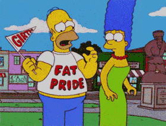

TA, a retired journalist once described as a 'Fat Shaming Innovator', spends most of his time between Scandinavia and central Europe in search of increasingly nubile 19 year olds.


Fat girls love taking photos of themselves. When their make-up is perfectly applied, the lighting perfectly aligned and their Spanx straight-jacket concealing the vast lunar craters dotting their thighs, a big girl can just about resemble an attractive woman.
This beauty is achieved for a fleeting second, with a half-life akin to a particularly unstable radioactive isotope, captured in an iPhone photo lens, then gone forever. Beyond this brief moment, a tubby lady would prefer to dive-bomb into an active volcano (poor volcano!) than have her photo taken in the wild.
A young woman named Caitlin Seida, a member of the plus-sized Cosplay community (yes, that is a thing in 2013), decided to venture out of her house dressed as the iconic female video game character Lara Croft.
Prancing around, ruining the fond memories that any man under 30 will have of his formative years spent with his PlayStation 1, Miss Seida was photographed by a passer-by, curious as to why Peter Griffin from Family Guy was wearing short-shorts.
The image was uploaded, and soon became viral on 4chan, 9gag and various other sites decreed unmissable for the office drones of the world. Meme-status was quickly achieved, with Seida winning the affectionate nickname ‘Fridge Raider’.
Now riding a wave of global infamy, Miss Seida, after a number of inevitable cupcake/bacon/twinkie binges, penned a wordy response at left-wing wailing-post Salon.com. In the midst of paragraphs of inane self-rationalization comes this nugget of excuses;
“That picture was taken late in the evening — I was red-faced from the heat, my makeup was sweating off and I was lacking proper boob support.”
Translation: “I look repulsive.”

It took her photo being shared by tens of millions of people, and the scorn of thousands to finally realize that years of emptying fridges with her mouth had culminated in her becoming an unsightly walking tumor on the face of the planet.
This shows that all you have to do to force a women to face her problems and take control of her life is to take her picture and upload it to the internet.
In support of this website’s successful Fat Shaming Week campaign, I urge, you to get out there and every time you see a girl with a bit of muffin top, bingo-wings or indeed cankles – take out your smartphone and snap a photo of her, then upload it to Twitter with the hashtag #FatShamingWeek.
The women of the world need your help and you can make the difference. Get snapping!
Read Next: Why America Can’t Afford Obesity
{kind=link}
{kind=link}
{kind=link}